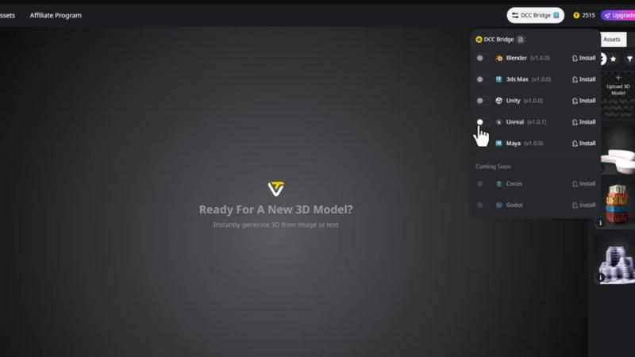
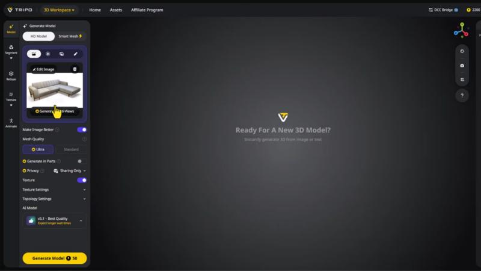
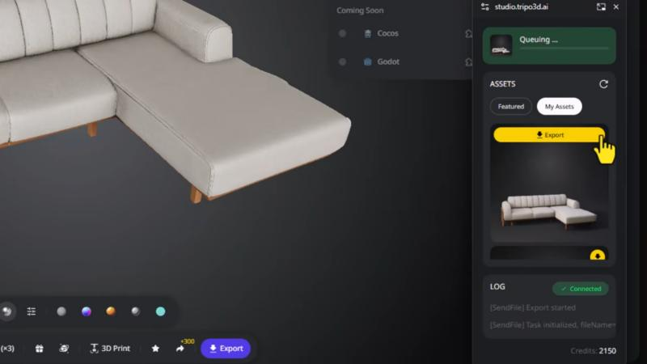
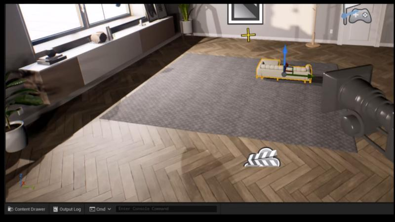
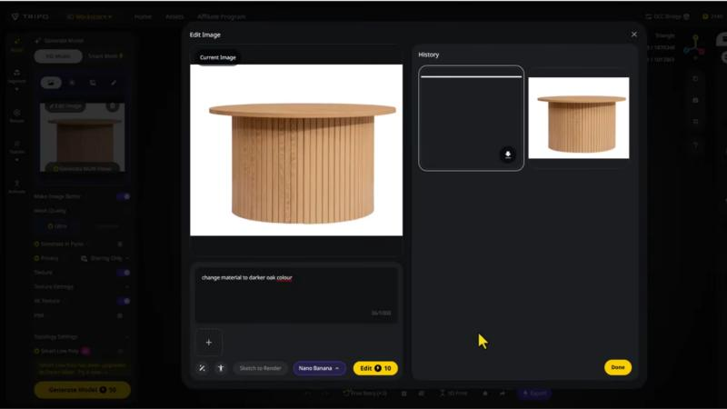
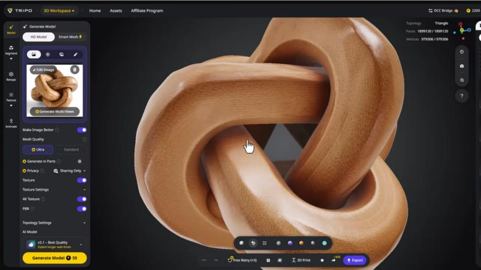

The gap in every interior scene is the same: you can find a photograph of the chair the client wants, and you cannot find a model of it. Manufacturers publish catalogues, not geometry.
This workflow closes that gap — reference image to a clean, textured, UV'd mesh, then straight into Unreal Engine through a bridge, with no export and import in between.
1. Install the bridge before you generate anything
In the Tripo studio web app, top right, there is a DCC Bridge button. It lists the supported applications — Blender, 3ds Max, Unity, Unreal, Maya, with others listed as coming.

Download the Unreal plugin and extract it. In your Unreal project folder, look for a Plugins folder — if there isn't one, create it — and paste the extracted folder in. Restart Unreal.
Each application has its own steps, but the pattern is the same, and the documentation covers them.
2. Generate the mesh
Upload a photo of the piece. One image is enough to start.

Three settings are worth being deliberate about:
- Ultra mesh quality, not Standard.
- 4K texture, under texture settings.
- Triangular topology for visualisation work.
A minute or so later you have the piece from every angle, with textures matching the single photograph. If it is wrong, re-run it or add more angles — which is the next step.
3. Push it into Unreal in one click
With the plugin installed, open the bridge panel again and toggle the Unreal connection. Your generated assets appear in a panel.

Press the download button on an asset and it converts to an Unreal asset and lands in the content browser — a static mesh, a material instance and a texture, in a new tripo models folder. It also drops into the open scene automatically.
One irritation: the assets are named randomly. Rename them as they arrive or the folder becomes unusable by the tenth piece.

Scale, position and rotation are yours to set. Nothing in the pipeline knows real dimensions, so check against something you have modelled. Once placed, the asset picks up the scene's lighting and post-processing like any other.
4. Multi-view, for anything with grain or direction
The biggest accuracy gain for the least effort. If you can find front and side images of the same piece, select multi-view and load both.
This matters most for materials with direction. Wooden slats come back with the grain running the right way, because it is reading the direction from your reference images rather than inventing it. For furniture in solid materials, this is the setting that makes the output usable rather than approximate.
5. Material variants through image editing
If you want the same piece in a different finish, you do not need a second reference. Drop in your image, click edit image, and you have Nano Banana and similar models available in place.

Prompt for a darker oak, keep both options, and generate 3D from each. Bad generations get free retries at no extra cost.
Load both into Unreal and you have the basis of a product configurator — multiple objects, multiple finishes, switchable in a real-time scene. Also the basis of switchable furniture collections for virtual staging, which is where this gets genuinely commercial.
6. When to turn on PBR
With standard 4K textures, a complex grain looks fine until you get close, and then it does not.

Under texture settings, tick PBR — physically based rendering materials, built to behave like real surfaces. The difference is obvious: imperfections, bumps, finer surface detail.
Use it for hero pieces and anything the camera gets near. For background props it is not worth the generation time.
Where this fits
- Aerials and mid-distance interiors: one image, ultra, 4K. Good enough.
- Foreground and hero pieces: multi-view plus PBR.
- Game, VR or AR: bridge to Unity instead and build smart low-poly meshes.
- Needs editing: bridge to Blender or 3ds Max first, apply your modifiers, then move on.
The real shift is not that you can generate a sofa. It is that you can use real products — the ones specified, from manufacturers who will never ship you a model — and have them in a real-time scene the same afternoon. Exterior work, urban furniture and landscape elements behave the same way.